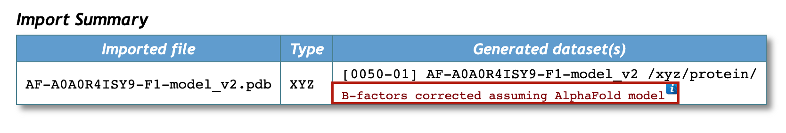

3.2. AlphaFold and RoseTTAFold models in CCP4 Cloud¶
AlphaFold2 and RoseTTAFold predicted models are widely acknowledged as good structure templates for Molecular Replacement (MR). This article describes AlphaFold implementation and the use of predicted models, regardless of their origin, in CCP4 Cloud.
3.2.1. Using structure predictions from external sources¶
Predicted models can be used in CCP4 Cloud in exactly the same way as models derived from experimentally determined structures (taken from PDB or elsewhere). The only difference between them is that structure prediction software puts pLLDT scores (AlphaFold) or rmsd estimates (RoseTTAFold) in place of B-factors. This misguides MR programs regarding the regions with low or high reliability, and, therefore, the scores must be recalculated as B-factors. The good news is that in CCP4 Cloud, this recalculation is done automatically and seamlessly for the user. If a predicted model is imported into a project, conversion to B-factors will be confirmed in the import summary table, and no other indications are given to the user.
{kind=link}
As a result, all models are treated in the same way in CCP4 Cloud. For example, Prepare MR Model(s) from Coordinate data task prepares MR search model(s) for further use in molecular replacement programs (Phaser and Molrep)
Just like PDB models, predicted models are automatically scanned, acquired and analysed in automatic pipelines MrBump, Find and prepare MR models with MrParse , Prepare MR Ensemble with CCP4mg, Prepare MR Ensemble from Sequence and Low-Resolution Refinement with Lorestr directly from the AlphaFold Database (AFDB) at the EBI.
3.2.2. Structure prediction in CCP4 Cloud¶
In addition to importing predicted models as files obtained from AlphaFold and RoseTTAFold servers, and fetching them from AFDB, CCP4 Cloud includes the Structure Prediction task, which uses AlphaFold-2 (in Openfold or ColabFold implementation) for generating structure models from the given sequence:
{kind=link}
The task produces coordinate data, which should be prepared (trimmed) as MR model before using in MR programs such as Phaser or Molrep. As an exception, predicted coordinates can be used in Slice and Slice-n-Dice directly, without a preliminary model preparation step. These tasks are useful in cases when noticeable conformations in MR models are expected (for example, predicted models cannot provide an exact hinge state or a twist between domains). Both Slice and Slice-n-Dice attempt to split the given model into a predefined number of conservative domains, and, in addition, Slice-n-Dice attempts to molecular replace them separately with Phaser.
Note
MoRDA and Arcimboldo Shredder provide functionality similar to Slice-n-Dice. They can use models directly and splits model into domains which will used for further MR.
3.2.3. After MR with predicted models¶
Post-phasing steps in structure solution are not different for MR with predicted or from-the-PDB models.
Predicted models usually have a very high sequence similarity with the target structure: 100% if a structure was generated from the given sequence, and very close to 100% if the structure was obtained from AFDB. Nevertheless, structure rebuilding with Modelcraft, CCP4 Build, Buccaneer or Arp/wArp is usually required after phasing because parts of the model are often removed at model preparation stage due to the low confidence score (equivalent to high B-factors). Even if the structure was phased using Slice-n-Dice without the model preparation step, not all domains may get fitted.
Building a structure includes cycles of manual corrections in Coot followed by refinement with a software of choice, Refmac or Buster. In low resolutions, the process is stabilised by using external restraints generated by Prosmart (part of Refmac task) from homologous structures. This is conveniently automated by Lorester, which can automatically acquire suitable structure homologs from both PDB and AFDB.
3.2.4. Using predicted models in automatic project workflows¶
CCP4 Cloud projects can be developed automatically using Automated Project Workflows (APWs), which perform a sequence of tasks corresponding to a typical user’s actions depending on available data.
APW Molecular Replacement with AlphaFold Model develops MR projects based on structure prediction done in CCP4 Cloud. It starts with data import and then uses Structure Prediction and MR with model splitting using Slice-n-Dice tasks to obtain a phased structure, which is then automatically rebuilt and refined. The result may be further improved with the elementary tasks in manual mode, allowing finer control over the task’s parameters.
Another APW: Automatic Molecular Replacement with MrBump or MoRDa uses MrBump for solving structure, which looks for suitable models in both the PDB and AFDB, followed by automatic model building, refinement, and optional ligand fitting.
Predicted models also can be used in APW: Simple Molecular Replacement with Search Model with prepares model and runs Phaser or Molrep, followed by automatic model building, refinement, and optional ligand fitting.
3.2.5. Tutorials¶
CCP4 Cloud goes with set of tutorials, the Creating Molecular Replacement Search Ensembles with CCP4MG/MrBUMP and Structure prediction for Molecular Replacement tutorials can be nice practice on how to create the ensembles for Molecular Replacement with CCP4mg molecular viewer.
ACKNOWLEDGEMENTS
This article uses materials kindly provided by Dr. Ronan Keegan, whose help is greatly appreciated.